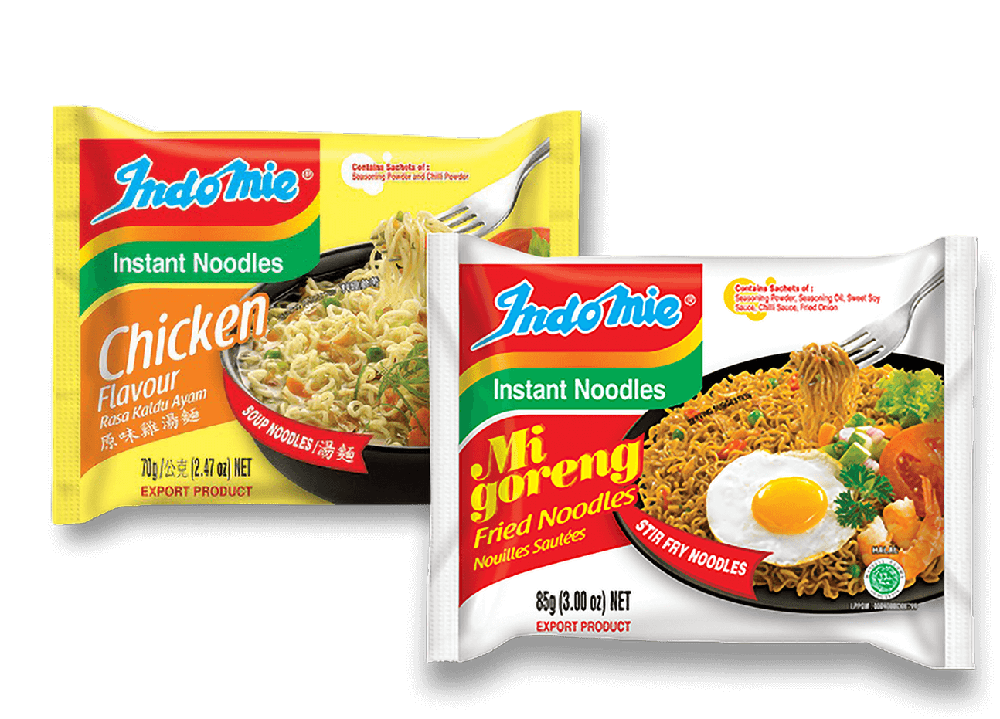

Indomie diproduksi oleh Indofood, pelopor mi instan di Indonesia dan merupakan salah satu produsen mi instan terbesar di dunia. Indomie hadir dalam berbagai varian, mulai dari rasa sup klasik seperti Ayam, Sayur, dan Kari Ayam, hingga rasa yang paling populer yaitu Indomie Mi Goreng. Tersedia di lebih dari 100 negara di seluruh dunia seperti Australia, Selandia Baru, Amerika Serikat, Kanada, di seluruh Asia, Afrika, Eropa, dan negara-negara Timur Tengah. Dengan kapasitas produksi tahunan sebanyak 19 miliar bungkus, tidak mengherankan jika Indomie menjadi salah satu rasa yang disukai di seluruh dunia.
Sejarah Indomie
Mi instan pertama kali diperkenalkan dan dipasarkan pada tahun 1958 di Jepang. Karena kepraktisannya dan rasanya yang lezat, mi instan diterima dengan baik dan disukai oleh orang Jepang. Segera setelah itu, popularitasnya menyebar ke seluruh dunia termasuk Indonesia.
Merek mi instan Indomie pertama kali diluncurkan pada tahun 1972 dengan rasa Indomie Ayam. Pada tahun 1982, Indomie meluncurkan Mi Goreng, varian mi kering pertama (dikonsumsi tanpa kaldu), yang terinspirasi oleh hidangan mi goreng tradisional Indonesia. Indomie Mi Goreng dengan cepat menjadi sangat populer dan menerobos pasar mi instan. Indomie sejak itu menjadi nama merek rumah tangga di Indonesia dan memegang sebagian besar pangsa pasar di Indonesia.
Kerja keras, ketekunan, dan inovasi adalah faktor kunci yang membuat Indomie berkembang menjadi mi instan yang paling banyak dipilih di Indonesia (Kantar Worldpanel, 2018). Setelah lebih dari empat dekade, Indomie masih memegang teguh nilai-nilai tersebut dan mempertahankan reputasinya yang baik. Indomie diproduksi oleh Indofood, pelopor mi instan di Indonesia dan merupakan salah satu produsen mi instan terbesar di dunia. Indomie hadir dalam berbagai varian, mulai dari rasa sup klasik seperti Ayam, Sayur, dan Kari Ayam, hingga rasa yang paling populer yaitu Indomie Mi Goreng. Tersedia di lebih dari 100 negara di seluruh dunia seperti Australia, Selandia Baru, Amerika Serikat, Kanada, di seluruh Asia, Afrika, Eropa, dan negara-negara Timur Tengah. Dengan kapasitas produksi tahunan sebanyak 19 miliar bungkus, tidak mengherankan jika Indomie menjadi salah satu rasa yang disukai di seluruh dunia
Produk Indomie

Produk terpopuler dari brand Indomie, Indomie Goreng pertama diluncurkan pada tahun 1982 dan telah merambah banyak negara termasuk Amerika Serikat, Australia, Inggris, Timur Tengah dan China. Jangan lewatkan berbagai pilihan rasa yang ditawarkan. Tidak seperti mi instan biasa. Indomie Goreng paling enak dikonsumsi tanpa kuah. Untuk merasakan cita rasa asli Indonesia, cukup rebus mie dalam air mendidih, tiriskan, dan tambahkan bumbu. Ada banyak rasa Indomie goreng yang bisa dicoba: Original, Rendang, Ayam Geprek, Rica-rica, dan masih banyak lagi.
Terinspirasi dari keragaman rempah-rempah Indonesia. Kombinasi dan campuran rempah-rempah Indonesia untuk kuah yang harum inilah yang membuat Indomie benar-benar lezat dan tak tertahankan.
Indomie kuah merupakan salah satu varian yang rasanya khusus diambil dari bumbu-bumbu makanan khas Indonesia. Perpaduan antara mi, kuah dan bumbu otentik makanan khas Indonesia menjadikan Indomie kuah makanan yang sangat spesial apalagi bila disajikan dikala cuaca dingin atau hujan.
 width="25%" class="img-contenttiga">
width="25%" class="img-contenttiga">